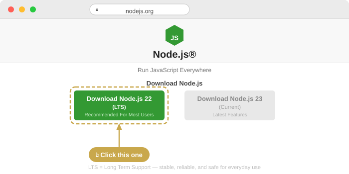
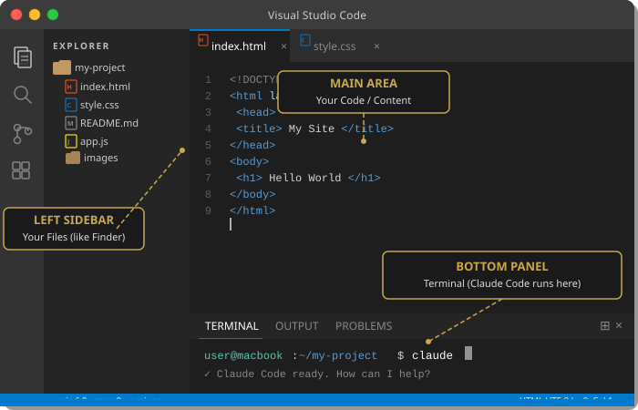
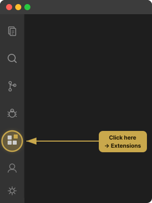

You've been using AI to work faster. This guide shows you how to use it to build things — tools, systems, pages — that run permanently inside your business. No coding required.
Up until now, you've been having conversations with AI. Ask a question, get an answer. Describe a task, get a draft. That's useful — genuinely. But it's still one task at a time, one conversation at a time.
Claude Code is different. Instead of chatting back and forth, you describe what you want to exist — and Claude builds it. A landing page. A reporting tool. An automated system that pulls data from your platforms every morning and sends you a summary before you've finished your coffee.
You don't write the code. You describe the outcome in plain English. Claude writes the code, runs it, tests it, fixes it, and delivers a finished product. That's not a productivity hack — it's a completely different category of tool.
Claude Code: Claude builds a content engine that pulls from your brand guidelines, creates a week's worth of posts, generates matching visuals, and schedules them — every week, without you touching it. The difference between asking someone to write a caption and hiring someone to run your content department.
Claude Code: Claude builds a dashboard that checks itself. It logs into your platforms, pulls the numbers, compares them to last week, flags anything that needs attention, and sends you a report. You don't open a browser. You don't remember to check. The system does it for you.
Claude Code: Claude builds an email system. Welcome sequences. Follow-up triggers. Re-engagement campaigns. All written in your voice, all connected to your CRM, all running automatically. You built it once. It works forever.
Chat taught Claude who you are. Cowork taught Claude what to do. Code teaches Claude how to build.
I built every one of these for my own business. Some of them replaced a full-time hire. Some of them replaced a process I'd been doing manually for two years. All of them started the same way: I described what I wanted, and Claude built it.
Here's what that looks like in practice.
Every morning at 7am, I get a Slack message that tells me exactly which clients need attention. Not a generic summary — a diagnostic. It pulls data from our CRM, the member management platform, and ad accounts. It compares this week to last week. It flags drops in lead flow, missed payments, declining attendance. It even tells me what to focus on in my next coaching call. I used to spend two hours every morning opening dashboards and doing this manually. Now I wake up and it's done.
I describe what I want — a landing page, a session guide, a full marketing site — and Claude builds it. Not a draft. Not a wireframe. A finished, styled, responsive page that works on every device. Then it deploys to a live URL. The page you're reading right now was built this way. I didn't write a single line of code. I described the structure, the content, the brand system — and Claude built the whole thing. Live on the internet. Under an hour.
We manage gym locations that use Hapana Core for member management. Every day, we need attendance reports, membership numbers, revenue data, cancellation records. That used to mean someone logging in, setting date filters, downloading CSVs, and cleaning up the data in a spreadsheet. Now Claude does it at 1am. It opens the browser, logs in, navigates to the right reports, downloads everything, processes it, and delivers clean summaries. The 45-minute Monday morning ritual? It runs itself while you sleep.
Every one of these was built by describing what was needed in plain English. No developers. No agencies. No waiting.
Claude Code out of the box is already powerful. But there are three capabilities that most people don't know about — and they change what's possible. I use all three of these every single day.
By default, Claude asks your permission before it reads a file, runs a command, or makes any change. That's responsible. It's also slow. When you're building something new and you trust the process, you can run claude --dangerously-skip-permissions — and Claude just goes. It plans the work, executes it, tests it, fixes issues — all without stopping to ask. A 20-minute build that would take 45 minutes with constant approvals. It's like the difference between micromanaging a new hire and trusting a senior employee. Use it when you're building something new. Not when you're changing something critical.
This is the one that surprises people. Claude can control your actual Mac applications through AppleScript. It can open Chrome, navigate to your member management dashboard, click through to the reports section, set date ranges, download files, and come back with the data. No API needed. No developer integration. Just Claude using your computer the way you would. I use this to log into Hapana Core, pull CSV reports, extract data from GoHighLevel, and navigate platforms that don't have API access. If you can do it on your Mac, Claude can do it for you.
Computer Use is the fallback when there's no API and no AppleScript shortcut. Claude can see your screen and interact with it directly — clicking, typing, scrolling, reading text from images. It's slower than AppleScript, but it means the answer to "can Claude do this?" is almost always yes. Platform-specific dashboards, proprietary tools, anything with a visual interface — Claude can navigate it. Nothing is completely off-limits.
Most people use Claude Code like a fancy text editor. These three features turn it into a remote employee with access to everything on your computer.
Tap the checkbox next to each step to check it off as you go. You'll also see coloured boxes throughout:
Grey boxes — explain what something is and why you need it
Amber boxes — something went wrong? These tell you how to fix it
Red boxes — important warnings. Read these before you continue
Green boxes — phase complete. You're ready for the next one
Press Cmd + Space, type Terminal, hit Enter.

Paste this into Terminal and hit Enter:
xcode-select --install
xcode-select -p — it should show a file pathGo to nodejs.org and click the big green button that says LTS. Download it, open the installer, and click through the steps.

Cmd + Q)Cmd + Space, type Terminal)node --version — you should see a number like v20.x.x or higherCmd + Q (not just the window — quit the app), reopen it, and try again. Still nothing? Restart your Mac and try once more.Paste this into Terminal and hit Enter:
npm install -g @anthropic-ai/claude-code
added 3 packages in 3s — that means it workedclaude --versionsudo npm install -g @anthropic-ai/claude-codesudo command again and try once more.Cmd + Q, reopen it, and try claude --version again.Type claude and hit Enter. The first time you run this, Claude will walk you through a few quick setup screens:
Let's make sure everything works. Paste these two commands one at a time:
cd ~/Desktop
claude
Once Claude is running, type this:
Create a file called hello.txt that says Claude Code is working
Phase 1 complete — Claude Code is installed and running on your Mac.
Go to code.visualstudio.com and click the big blue download button for Mac.
.zip fileVS Code looks overwhelming at first. Here's all you need to know:

Click the Extensions icon in the left sidebar — it looks like four small squares.

Claude CodeGo to File → Open Folder and pick your Desktop, or create a new folder called something like My Projects.
You need to open the Terminal panel inside VS Code. This is the dark bar at the bottom of the window — not the main editing area in the centre where you type text.
Ctrl + ` — backtick, the key above Tab)claude and hit Enterclaude into a file. If you see your text appearing in the big centre area of VS Code with line numbers next to it — that's the editor, not the Terminal. You need the dark panel at the bottom of the screen. Go to View → Terminal to open it.Phase 2 complete — VS Code is your new workspace. Everything in one place.
CLAUDE.md is a file that Claude reads at the start of every single conversation. It's your business cheat sheet.
Pick the one that applies to you:
If you've already created a Business Profile document inside Claude Chat, you can use it to generate your CLAUDE.md automatically.
Ctrl + `)claude and hit EnterRead the file called [your-filename] on my Desktop and use it to create my CLAUDE.md file at ~/.claude/CLAUDE.md. Include everything relevant about my business — who I am, what I do, who I serve, my platforms, my brand voice.
Business-Profile.pdf or business-profile.txt. Claude will read the document, extract the key information, and create the file for you.No worries — you can create your CLAUDE.md from scratch. Open VS Code terminal, type claude, and paste this:
Create a CLAUDE.md file at ~/.claude/CLAUDE.md with the following information about my business:
- Business name: [your business name]
- What I do: [your services/offers]
- Who I serve: [your target market]
- Platforms I use: [CRM, social, email, etc.]
- How I communicate: [brand voice, tone]
- Other context: [anything else that helps]
Let's make sure Claude actually reads your business context:
/exit or press Ctrl + Cclaude and hit EnterWhat do you know about my business?Phase 3 complete — Claude now knows your business before you say a word.
By default, Claude asks your permission before it reads a file, runs a command, or makes any change. That's responsible — but it's slow.
Instead of typing claude, run this:
claude --dangerously-skip-permissions
Don't use this when you're changing something critical that already works. Use it when you're building something new.
Phase 4 complete — you're fully set up. Claude Code is installed, your workspace is ready, Claude knows your business, and you know how to build at full speed. Go to the next tab and build something.
No. That's the whole point. You describe what you want in plain English — Claude writes the code. You'll paste a few commands during setup, but you don't need to understand them. You just need to follow the steps.
No. VS Code is completely free and always will be. It's made by Microsoft and used by millions of people. There's no trial, no subscription, no catch.
Yes. Claude Code uses your Claude Pro subscription — the same account you use for Claude Chat at claude.ai. If you're already chatting with Claude, you're already paying for it. No extra cost.
Claude Chat is for conversations — ask questions, get answers, brainstorm ideas. Claude Code is for building — it creates files, writes code, builds tools, and deploys them. Chat is your advisor. Code is your builder.
Just reopen VS Code (or Terminal) and type claude. Everything you've set up stays installed. Your CLAUDE.md file stays saved. You don't need to redo any of this. Just pick up where you left off.
No. Claude Code works inside your project folder — it's not touching your system files, your apps, or anything outside the folder you're working in. The worst that can happen is Claude creates a file you don't want, and you delete it. That's it.
This is the moment it clicks. You're going to describe something in plain English — and watch Claude turn it into a working tool on your computer.
We're going to build a Revenue Calculator. Something you could actually use with a client or on your own business. Follow these steps exactly.
Same as before — Cmd + Space, type "Terminal", hit Enter.
Paste this and hit Enter: mkdir ~/Desktop/my-first-build && cd ~/Desktop/my-first-build
Type claude and hit Enter. Wait for the prompt to appear.
Copy the entire block below and paste it into Claude.
Claude will plan the build, write the code, and create the file. This takes 1–2 minutes. You don't need to do anything — just watch.
Go to your Desktop, open the my-first-build folder, and double-click index.html. That's your finished tool — working, styled, responsive.
That's a working tool on your computer. You described it in English, Claude built it in code. You could send this to a client, embed it on your website, or use it in a sales conversation. And it took less time than writing a caption.
Want to try something else? Here are a few more prompts you can run the same way:
"Build a landing page for a 6-week transformation challenge. Include a hero section, three benefit blocks, social proof placeholder, and a sign-up form. Use [your brand colours]. Make it mobile responsive."
"Build an opt-in page for a free PDF guide called '5 Things Killing Your Gym Revenue.' Include a headline, 3 bullet points about what's inside, an email capture form, and a download button. Clean, professional design."
"Build an interactive quiz called 'Is Your Business Ready to Scale?' with 8 multiple choice questions about systems, revenue, team, and marketing. Show a score at the end with a personalised recommendation."
You just built something that would have cost $500–2,000 from a freelancer. It took 5 minutes and a sentence.
The Revenue Calculator was a proof of concept. The real value starts when you build things that solve actual problems in your business — the report you pull manually every Monday, the landing page you've been meaning to build for three months, the onboarding flow that's still in a Google Doc.
Every time you build something with Claude Code, it gets better at understanding your business. Your CLAUDE.md file is the key — keep adding to it. What platforms you use. What your brand sounds like. What your clients care about. The more context Claude has, the less you need to explain every time.
The progression looks like this: you start with single builds (pages, tools, calculators). Then you move to recurring automations (reports that run themselves, data that pulls itself). Then you build full systems — connected infrastructure that makes your business run without you being the bottleneck.
If you haven't explored Claude Cowork yet, start at cowork.kaizencollective.com.au — it's the delegation layer that pairs with what you've just learned here. Cowork handles the tasks. Code builds the systems. Together, they change how you operate.
If you want help building more complex systems — automated reporting, client onboarding flows, tools that connect your platforms — that's what we do at Kaizen. Reach out when you're ready.
Don't just read this guide — build something.